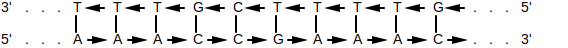

A k-mer is a subsequence of length k within some larger biological sequence (e.g. DNA or amino acid chain). For example, in the DNA sequence GAAATC, the following k-mer's exist:
| k | k-mers |
|---|---|
| 1 | G A A A T C |
| 2 | GA AA AA AT TC |
| 3 | GAA AAA AAT ATC |
| 4 | GAAA AAAT AATC |
| 5 | GAAAT AAATC |
| 6 | GAAATC |
Often times we'll need to either...
WHAT: Given a DNA k-mer, calculate its reverse complement.
WHY: Depending on the type of biological sequence, a k-mer may have one or more alternatives. For DNA sequences specifically, a k-mer of interest may have an alternate form. Since the DNA molecule comes as 2 strands, where ...
, ... the reverse complement of that k-mer may be just as valid as the original k-mer. For example, if an enzyme is known to bind to a specific DNA k-mer, it's possible that it might also bind to the reverse complement of that k-mer.
ALGORITHM:
def reverse_complement(strand: str):
ret = ''
for i in range(0, len(strand)):
base = strand[i]
if base == 'A' or base == 'a':
base = 'T'
elif base == 'T' or base == 't':
base = 'A'
elif base == 'C' or base == 'c':
base = 'G'
elif base == 'G' or base == 'g':
base = 'C'
else:
raise Exception('Unexpected base: ' + base)
ret += base
return ret[::-1]Original: TAATCCG
Reverse Complement: CGGATTA
WHAT: Given 2 k-mers, the hamming distance is the number of positional mismatches between them.
WHY: Imagine an enzyme that looks for a specific DNA k-mer pattern to bind to. Since DNA is known to mutate, it may be that that enzyme can also bind to other k-mer patterns that are slight variations of the original. For example, that enzyme may be able to bind to both AAACTG and AAAGTG.
ALGORITHM:
def hamming_distance(kmer1: str, kmer2: str) -> int:
mismatch = 0
for ch1, ch2 in zip(kmer1, kmer2):
if ch1 != ch2:
mismatch += 1
return mismatchKmer1: ACTTTGTT
Kmer2: AGTTTCTT
Hamming Distance: 2
↩PREREQUISITES↩
WHAT: Given a source k-mer and a minimum hamming distance, find all k-mers such within the hamming distance of the source k-mer. In other words, find all k-mers such that hamming_distance(source_kmer, kmer) <= min_distance.
WHY: Imagine an enzyme that looks for a specific DNA k-mer pattern to bind to. Since DNA is known to mutate, it may be that that enzyme can also bind to other k-mer patterns that are slight variations of the original. This algorithm finds all such variations.
ALGORITHM:
def find_all_dna_kmers_within_hamming_distance(kmer: str, hamming_dist: int) -> set[str]:
def recurse(kmer: str, hamming_dist: int, output: set[str]) -> None:
if hamming_dist == 0:
output.add(kmer)
return
for i in range(0, len(kmer)):
for ch in 'ACTG':
neighbouring_kmer = kmer[:i] + ch + kmer[i + 1:]
recurse(neighbouring_kmer, hamming_dist - 1, output)
output = set()
recurse(kmer, hamming_dist, output)
return outputKmers within hamming distance 1 of AAAA: {'AAAA', 'AAAG', 'AGAA', 'AACA', 'AAGA', 'AAAT', 'TAAA', 'AATA', 'ACAA', 'AAAC', 'GAAA', 'CAAA', 'ATAA'}
WHAT: Given a k-mer, find where that k-mer occurs in some larger sequence. The search may potentially include the k-mer's variants (e.g. reverse complement).
WHY: Imagine that you know of a specific k-mer pattern that serves some function in an organism. If you see that same k-mer pattern appearing in some other related organism, it could be a sign that that k-mer pattern serves a similar function. For example, the same k-mer pattern could be used by 2 related types of bacteria as a DnaA box.
The enzyme that operates on that k-mer may also operate on its reverse complement as well as slight variations on that k-mer. For example, if an enzyme binds to AAAAAAAAA, it may also bind to its...
ALGORITHM:
class Options(NamedTuple):
hamming_distance: int = 0
reverse_complement: bool = False
def find_kmer_locations(sequence: str, kmer: str, options: Options = Options()) -> List[int]:
# Construct test kmers
test_kmers = set()
test_kmers.add(kmer)
[test_kmers.add(alt_kmer) for alt_kmer in find_all_dna_kmers_within_hamming_distance(kmer, options.hamming_distance)]
if options.reverse_complement:
rc_kmer = reverse_complement(kmer)
[test_kmers.add(alt_rc_kmer) for alt_rc_kmer in find_all_dna_kmers_within_hamming_distance(rc_kmer, options.hamming_distance)]
# Slide over the sequence's kmers and check for matches against test kmers
k = len(kmer)
idxes = []
for seq_kmer, i in slide_window(sequence, k):
if seq_kmer in test_kmers:
idxes.append(i)
return idxesFound AAAA in AAAAGAACCTAATCTTAAAGGAGATGATGATTCTAA at index [0, 1, 2, 3, 12, 15, 16, 30]
↩PREREQUISITES↩
WHAT: Given a k-mer, find where that k-mer clusters in some larger sequence. The search may potentially include the k-mer's variants (e.g. reverse complement).
WHY: An enzyme may need to bind to a specific region of DNA to begin doing its job. That is, it looks for a specific k-mer pattern to bind to, where that k-mer represents the beginning of some larger DNA region that it operates on. Since DNA is known to mutate, often times you'll find multiple copies of the same k-mer pattern clustered together -- if one copy mutated to become unusable, the other copies are still around.
For example, the DnaA box is a special k-mer pattern used by enzymes during DNA replication. Since DNA is known to mutate, the DnaA box can be found repeating multiple times in the region of DNA known as the replication origin. Finding the DnaA box clustered in a small region is a good indicator that you've found the replication origin.
ALGORITHM:
def find_kmer_clusters(sequence: str, kmer: str, min_occurrence_in_cluster: int, cluster_window_size: int, options: Options = Options()) -> List[int]:
cluster_locs = []
locs = find_kmer_locations(sequence, kmer, options)
start_i = 0
occurrence_count = 1
for end_i in range(1, len(locs)):
if locs[end_i] - locs[start_i] < cluster_window_size: # within a cluster window?
occurrence_count += 1
else:
if occurrence_count >= min_occurrence_in_cluster: # did the last cluster meet the min ocurr requirement?
cluster_locs.append(locs[start_i])
start_i = end_i
occurrence_count = 1
return cluster_locsFound clusters of GGG (at least 3 occurrences in window of 13) in GGGACTGAACAAACAAATTTGGGAGGGCACGGGTTAAAGGAGATGATGATTCAAAGGGT at index [19, 37]
WHAT: Given a sequence, find clusters of unique k-mers within that sequence. In other words, for each unique k-mer that exists in the sequence, see if it clusters in the sequence. The search may potentially include variants of k-mer variants (e.g. reverse complements of the k-mers).
WHY: An enzyme may need to bind to a specific region of DNA to begin doing its job. That is, it looks for a specific k-mer pattern to bind to, where that k-mer represents the beginning of some larger DNA region that it operates on. Since DNA is known to mutate, often times you'll find multiple copies of the same k-mer pattern clustered together -- if one copy mutated to become unusable, the other copies are still around.
For example, the DnaA box is a special k-mer pattern used by enzymes during DNA replication. Since DNA is known to mutate, the DnaA box can be found repeating multiple times in the region of DNA known as the replication origin. Given that you don't know the k-mer pattern for the DnaA box but you do know the replication origin, you can scan through the replication origin for repeating k-mer patterns. If a pattern is found to heavily repeat, it's a good candidate that it's the k-mer pattern for the DnaA box.
ALGORITHM:
from Utils import slide_window
def count_kmers(data: str, k: int, options: Options = Options()) -> Counter[str]:
counter = Counter()
for kmer, i in slide_window(data, k):
neighbourhood = find_all_dna_kmers_within_hamming_distance(kmer, options.hamming_distance)
for neighbouring_kmer in neighbourhood:
counter[neighbouring_kmer] += 1
if options.reverse_complement:
kmer_rc = reverse_complement(kmer)
neighbourhood = find_all_dna_kmers_within_hamming_distance(kmer_rc, options.hamming_distance)
for neighbouring_kmer in neighbourhood:
counter[neighbouring_kmer] += 1
return counter
def top_repeating_kmers(data: str, k: int, options: Options = Options()) -> Set[str]:
counts = count_kmers(data, k, options)
_, top_count = counts.most_common(1)[0]
top_kmers = set()
for kmer, count in counts.items():
if count == top_count:
top_kmers.add((kmer, count))
return top_kmersTop 5-mer frequencies for GGGACTGAACAAACAAATTTGGGAGGGCACGGGTTAAAGGAGATGATGATTCAAAGGGT:
↩PREREQUISITES↩
WHAT: Given a sequence, find regions within that sequence that contain clusters of unique k-mers. In other words, ...
The search may potentially include variants of k-mer variants (e.g. reverse complements of the k-mers).
WHY: An enzyme may need to bind to a specific region of DNA to begin doing its job. That is, it looks for a specific k-mer pattern to bind to, where that k-mer represents the beginning of some larger DNA region that it operates on. Since DNA is known to mutate, often times you'll find multiple copies of the same k-mer pattern clustered together -- if one copy mutated to become unusable, the other copies are still around.
For example, the DnaA box is a special k-mer pattern used by enzymes during DNA replication. Since DNA is known to mutate, the DnaA box can be found repeating multiple times in the region of DNA known as the replication origin. Given that you don't know the k-mer pattern for the DnaA box but you do know the replication origin, you can scan through the replication origin for repeating k-mer patterns. If a pattern is found to heavily repeat, it's a good candidate that it's the k-mer pattern for the DnaA box.
ALGORITHM:
def scan_for_repeating_kmers_in_clusters(sequence: str, k: int, min_occurrence_in_cluster: int, cluster_window_size: int, options: Options = Options()) -> Set[KmerCluster]:
def neighborhood(kmer: str) -> Set[str]:
neighbourhood = find_all_dna_kmers_within_hamming_distance(kmer, options.hamming_distance)
if options.reverse_complement:
kmer_rc = reverse_complement(kmer)
neighbourhood = find_all_dna_kmers_within_hamming_distance(kmer_rc, options.hamming_distance)
return neighbourhood
kmer_counter = {}
def add_kmer(kmer: str, loc: int) -> None:
if kmer not in kmer_counter:
kmer_counter[kmer] = set()
kmer_counter[kmer].add(window_idx + kmer_idx)
def remove_kmer(kmer: str, loc: int) -> None:
kmer_counter[kmer].remove(window_idx - 1)
if len(kmer_counter[kmer]) == 0:
del kmer_counter[kmer]
clustered_kmers = set()
old_first_kmer = None
for window, window_idx in slide_window(sequence, cluster_window_size):
first_kmer = window[0:k]
last_kmer = window[-k:]
# If first iteration, add all kmers
if window_idx == 0:
for kmer, kmer_idx in slide_window(window, k):
for alt_kmer in neighborhood(kmer):
add_kmer(alt_kmer, window_idx + kmer_idx)
else:
# Add kmer that was walked in to
for new_last_kmer in neighborhood(last_kmer):
add_kmer(new_last_kmer, window_idx + cluster_window_size - k)
# Remove kmer that was walked out of
if old_first_kmer is not None:
for alt_kmer in neighborhood(old_first_kmer):
remove_kmer(alt_kmer, window_idx - 1)
old_first_kmer = first_kmer
# Find clusters within window -- tuple is k-mer, start_idx, occurrence_count
[clustered_kmers.add(KmerCluster(k, min(v), len(v))) for k, v in kmer_counter.items() if len(v) >= min_occurrence_in_cluster]
return clustered_kmersFound clusters of k=9 (at least 6 occurrences in window of 20) in TTTTTTTTTTTTTCCCTTTTTTTTTCCCTTTTTTTTTTTTT at...
WHAT: Given a sequence, walk over it and ...
WHY: Given the DNA sequence of an organism, some segments may have lower count of Gs vs Cs.
During replication, some segments of DNA stay single-stranded for a much longer time than other segments. Single-stranded DNA is 100 times more susceptible to mutations than double-stranded DNA. Specifically, in single-stranded DNA, C has a greater tendency to mutate to T. When that single-stranded DNA re-binds to a neighbouring strand, the positions of any nucleotides that mutated from C to T will change on the neighbouring strand from G to A.
⚠️NOTE️️️⚠️
Recall that the reverse complements of ...
It mutated from C to T. Since its now T, its complement is A.
Plotting the skew lets you know the rough location of segments that stayed single-stranded for a longer period of time. That information hints at special / useful locations in the organism's DNA sequence (replication origin / replication terminus).
ALGORITHM:
def gc_skew(seq: str):
counter = 0
skew = [counter]
for i in range(len(seq)):
if seq[i] == 'G':
counter += 1
skew.append(counter)
elif seq[i] == 'C':
counter -= 1
skew.append(counter)
else:
skew.append(counter)
return skewCalculating skew for: ...
Result: [0, -1, -1,...

Bacteria are known to have a single chromosome of circular / looping DNA. On that DNA, the replication origin (ori) is the region in which DNA replication starts, while the replication terminus (ter) is where it ends. The ori and ter and usually placed on opposite ends of each other.

The replication process begins by a replication fork opening at the ori. As replication happens, that fork widens until the point it reaches ter...

For each forked single-stranded DNA, DNA polymerases attach on and synthesize a new reverse complement strand so that it turns back into double-stranded DNA....

The process of synthesizing a reverse complement strand is different based on the section of DNA that DNA polymerase is operating on. For each single-stranded DNA, if the direction of that DNA strand is traveling from ...

Since DNA polymerase can only walk over DNA in the reverse direction (3' to 5'), the 2 reverse half-strands will quickly get walked over in one shot. A primer gets attached to the ori, then a DNA polymerase attaches to that primer to begin synthesis of a new strand. Synthesis continues until the ter is reached...

For the forward half-strands, the process is much slower. Since DNA polymerase can only walk DNA in the reverse direction, the forward half-strands get replicated in small segments. That is, as the replication fork continues to grow, every ~2000 nucleotides a new primer attaches to the end of the fork on the forward strands. A new DNA polymerase attaches to each primer and walks in the reverse direction (towards the ori) to synthesize a small segment of DNA. That small segment of DNA is called an Okazaki fragment...
The replication fork will keep widening until the original 2 strands split off. DNA polymerase will have made sure that for each separated strand, a newly synthesized reverse complement is paired to it. The end result is 2 daughter chromosome where each chromosome has gaps...
The Okazaki fragments synthesized on the forward strands end up getting sewn together by DNA ligase...

You now have two complete copies of the DNA.
↩PREREQUISITES↩
Since the forward half-strand gets its reverse complement synthesized at a much slower rate than the reverse half-strand, it stays single stranded for a much longer time. Single-stranded DNA is 100 times more susceptible to mutations than double-stranded DNA. Specifically, in single-stranded DNA, C has a greater tendency to mutate to T. This process of mutation is referred to as deanimation.
The reverse half-strand spends much less time as a single-stranded DNA. As such, it experiences much less C to T mutations.

Ultimately, that means that a single strand will have a different nucleotide distribution between its forward half-strand vs its backward half-strand. If the half-strand being targeted for replication is the ...
To simplify, the ...
You can use a GC skew diagram to help pinpoint where the ori and ter might be. The plot will typically form a peak where the ter is (more G vs C) and form a valley where the ori is (less G vs C). For example, the GC skew diagram for E. coli bacteria shows a distinct peak and distinct valley.
Calculating skew for: ...
Result: [0, 0, 1, 0,...

Min position (ori): 4719166
Max position (ter): 2073768
⚠️NOTE️️️⚠️
The material talks about how not all bacteria have a single peak and single valley. Some may have multiple. The reasoning for this still hasn't been discovered. It was speculated at one point that some bacteria may have multiple ori / ter regions.
Within the ori region, there exists several copies of some k-mer pattern. These copies are referred to as DnaA boxes.

The DnaA protein binds to a DnaA box to activate the process of DNA replication. Through experiments, biologists have determined that DnaA boxes are typical 9-mers.
⚠️NOTE️️️⚠️
The reason why multiple copies of the same k-mer exist (DnaA box) probably has to do with DNA mutation. If one of the copies mutates to a point where the DnaA protein no longer binds to it, it can still bind to the other copies.
For some bacterial organism, given that we've found the general vicinity of the ori for that organism, we can search that vicinity for repeating 9-mers instances. The 9-mers may not match exactly -- the DnaA protein may bind to ...
The repeating k-mers found are potential DnaA box candidates.
For example, we know where the general vicinity of the ori is in E. coli given its GC skew. We can search the vicinity of the ori for repeating k-mers.
Calculating skew for: ...
Result: [0, 0, 1, 0,...
Ori vicinity (min pos): 4719166
In the ori vicinity, found clusters of k=9 (at least 3 occurrences in window of 500) in ... at...
TODO: RUN CODE TO LIST OUT THE KMERS IN THE ORI
TODO: RUN CODE TO LIST OUT THE KMERS IN THE ORI
TODO: RUN CODE TO LIST OUT THE KMERS IN THE ORI
TODO: RUN CODE TO LIST OUT THE KMERS IN THE ORI
TODO: RUN CODE TO LIST OUT THE KMERS IN THE ORI
TODO: RUN CODE TO LIST OUT THE KMERS IN THE ORI
TODO: RUN CODE TO LIST OUT THE KMERS IN THE ORI
TODO: RUN CODE TO LIST OUT THE KMERS IN THE ORI
A k-mer is a subsequence of length k within some larger biological sequence (e.g. DNA or amino acid chain). For example, in the DNA sequence GAAATC, the following k-mer's exist:
| k | k-mers |
|---|---|
| 1 | G A A A T C |
| 2 | GA AA AA AT TC |
| 3 | GAA AAA AAT ATC |
| 4 | GAAA AAAT AATC |
| 5 | GAAAT AAATC |
| 6 | GAAATC |
5' (5 prime) / 3' (3 prime) - 5' (5 prime) and 3' (3 prime) describe the opposite ends of DNA. The chemical structure at each end is what defines if it's 5' or 3' -- each end is guaranteed to be different from the other. The forward direction on DNA is defined as 5' to 3', while the backwards direction is 3' to 5'.
Two complementing DNA strands will always be attached in opposite directions.

DNA polymerase - An enzyme that replicates a strand of DNA. That is, DNA polymerase walks over a single strand of DNA bases (not the strand of base pairs) and generates a strand of complements. Before DNA polymerase can attach itself and start replicating DNA, it requires a primer.
DNA polymerase is unidirectional, meaning that it can only walk a DNA strand in one direction: reverse (3' to 5')
primer - A primer is a short strand of RNA that binds to some larger strand of DNA (single bases, not a strand of base pairs) and allows DNA synthesis to happen. That is, the primer acts as the entry point for special enzymes DNA polymerases. DNA polymerases bind to the primer to get access to the strand.
replication fork - The process of DNA replication requires that DNA's 2 complementing strands be unwound and split open. The area where the DNA starts to split is called the replication fork. In bacteria, the replication fork starts at the replication origin and keeps expanding until it reaches the replication terminus. Special enzymes called DNA polymerases walk over each unwound strand and create complementing strands.
replication origin (ori) - The point in DNA at which replication starts.
replication terminus (ter) - The point in DNA at which replication ends.
forward half-strand / reverse half-strand - Bacteria are known to have a single chromosome of circular / looping DNA. In this DNA, the replication origin (ori) is the region of DNA where replication starts, while the replication terminus (ter) is where replication ends.

If you split up the DNA based on ori and ter being cutting points, you end up with 4 distinct strands. Given that the direction of a strand is 5' to 3', if the direction of the strand starts at...
ori and ends at ter, it's called the forward half-strand.

ter and ends at ori, it's called the reverse half-strand.

⚠️NOTE️️️⚠️
leading half-strand / lagging half-strand - Given the 2 strands tha make up a DNA molecule, the strand that goes in the...
This nomenclature has to do with DNA polymerase. Since DNA polymerase can only walk in the reverse direction (3' to 5'), it synthesizes the leading half-strand in one shot. For the lagging half-strand (5' to 3'), multiple DNA polymerases have to used to synthesize DNA, each binding to the lagging strand and walking backwards a small amount to generate a small fragment of DNA (Okazaki fragment). the process is much slower for the lagging half-strand, that's why it's called lagging.
⚠️NOTE️️️⚠️
Okazaki fragment - A small fragment of DNA generated by DNA polymerase for forward half-strands. DNA synthesis for the forward half-strands can only happen in small pieces. As the fork open ups every ~2000 nucleotides, DNA polymerase attaches to the end of the fork on the forward half-strand and walks in reverse to generate that small segment (DNA polymerase can only walk in the reverse direction).
DNA ligase - An enzyme that sews together short segments of DNA called Okazaki fragments by binding the phosphate group on the end of one strand with the deoxyribose group on the other strand.
single stranded DNA - A single strand of DNA, not bound to a strand of its reverse complements.
double stranded DNA - Two strands of DNA bound together, where each strand is the reverse complement of the other.
